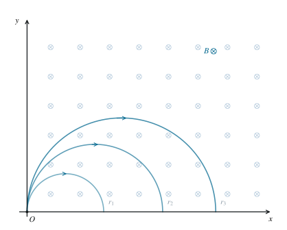

匀强磁场中的轨迹圆族
01 / KNOWLEDGE
知识库
初等数学、大学数学基础与物理学。
02 / PROBLEMS
题库
数学与物理综合题，按主题与难度编排。
03 / NEWS
新闻与公告
网站公告、课程资料与科学教育新闻。
函数 / 深入专题周期函数与有限频谱
平移群 · 连续性 · 算子投影 · 整数采样
15 篇 · 进入专题 ↗跨章节 / 阅读顺序专题阅读路径代数、几何与物理中的共同结构
8 条路径 · 查看先修关系 ↗物理 / 知识专题
7 章 · 65 篇 ↗初等与普通电磁学
电荷与电场 · 导体与介质 · 直流网络 · 磁场与感应 · 暂态与交流 · 电磁波
物理 / 知识专题
5 章 · 33 篇 ↗初等与普通光学
光程与界面 · 傍轴成像 · 相干与干涉 · 衍射与分辨率 · 偏振与光束
数学 / 知识专题
10 章 · 43 篇 ↗圆锥曲线与解析几何
焦点与准线 · 弦与直径 · 切线与极线 · 射影结构 · 双曲线与抛物线
数学 / 知识专题
5 章 · 50 篇 ↗函数与导数
函数构造与图像 · 微分原理 · 凸性与极值 · 周期与频谱
物理 / 知识专题
9 章 · 68 篇 ↗初等与普通热学
热力学定律 · 气体动理论 · 相变与统计 · 化学热力学基础
物理 / 知识专题
9 章 · 88 篇 ↗初等与普通力学
质点系 · 刚体 · 天体力学 · 振动与波动 · 流体
物理 / 真题试卷
7 道题目 第 43 届全国中学生物理竞赛复赛
综合题 7 道 · 满分 320 分
数学 / 真题试卷
11 道题目 2026 数学联赛一试（A 卷）
填空题 8 道 · 解答题 3 道 · 满分 120 分
数学 / 真题试卷
5 道题目 2026 武汉三月调研 · 数学选题
选录第 8、11、14、18、19 题 · 圆锥曲线、函数与组合计数
PHYSICS / 专题